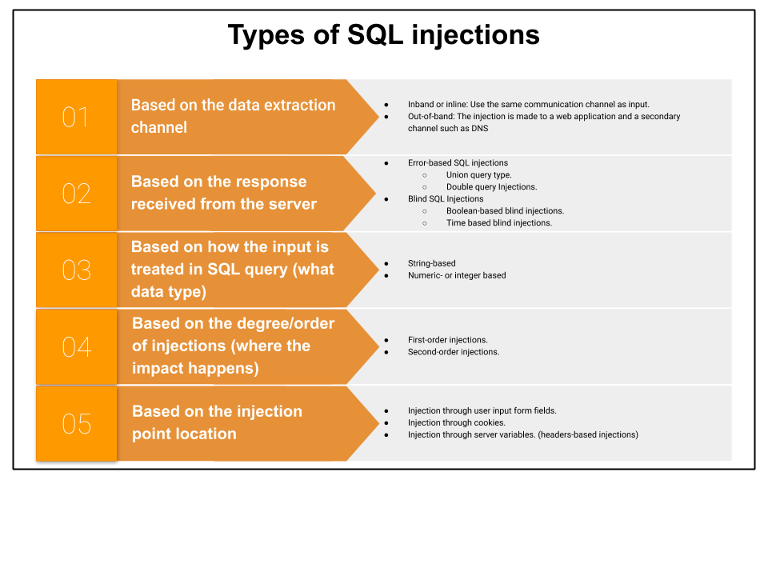

Classes of attack
SQL Injection attacks can be divided mainly into the following three classes:
• Inband: data is extracted using the same channel that is used to inject the SQL code. This is the most straightforward kind of attack, in which the retrieved data is presented directly in the application web page.
• Out-of-band: data is retrieved using a different channel (e.g., an email with the results of the query is generated and sent to the tester).
• Inferential or Blind: there is no actual transfer of data, but the tester is able to reconstruct the information by sending particular requests and observing the resulting behavior of the DB Server.
A successful SQL Injection attack requires the attacker to craft a syntactically correct SQL Query. If the application returns an error message generated by an incorrect query, then it may be easier for an attacker to reconstruct the logic of the original query and, therefore, understand how to perform the injection correctly. However, if the application hides the error details, then the tester must be able to reverse engineer the logic of the original query.
